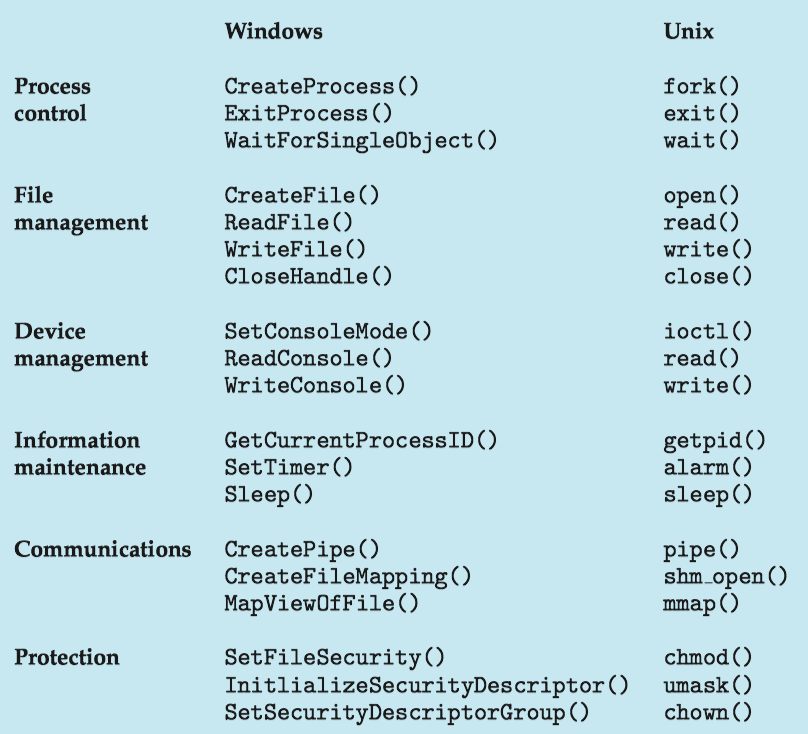
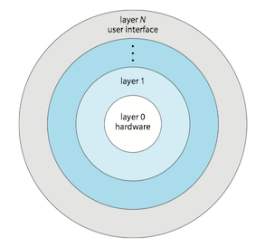
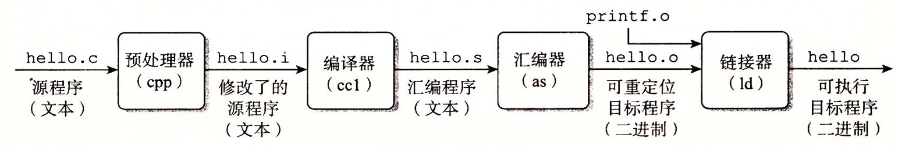
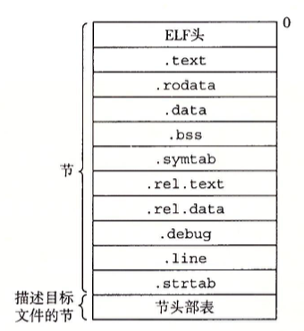
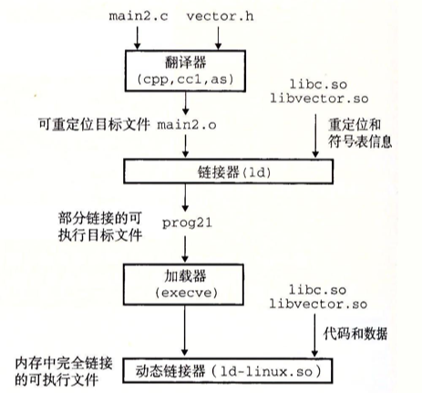
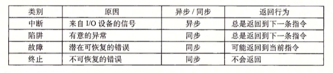
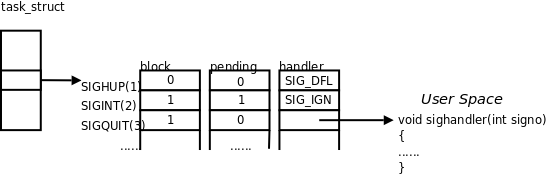

Operating System Concepts 2 - Operating System structures
Operating system service
The figure below is a view of the various operating-system services and how they interrelate.

User Interface
There're mainly three ways for users to interface with the operating system:
- command interpreter
- graphical user interface
- touch-screen interface
System call
System calls provide an interface to the services made available by an operating system.
API
Typically, application developers design programs according to an application programming interface(API, 应用程序编程接口) rather than invoking actual system call.
- because even simple program may make heavy use of system call.
- program portability: expect programs to compile and run other system that supports the same API
- run-time environment(RTE, 运行时环境) - the full suit of software needed to execute applications, including its compilers, interpreters, libraries, loaders.
Types of system calls
System calls can be grouped roughly into six major categories:
系统调用可分成六大类：进程控制，文件管理，设备管理，信息维护，通信和保护。
- process control
- file management
- device management
- information maintenance
- communications
- protection

Operating system structure
Monolithic structure
Operating systems with monolithic structure (单体结构) place all of the functionality of kernel into a single, static binary file that runs in a single address space.
- a common technique for designing operating system
- e.g. original Unix operating system ( figure below)

- e.g. Linux is based on Unix and is structured similarly, as shown in figure below.

pros
- simplicity of kernels
- a distinct performance advantage
- very little overhead in the system-call interface
- fast communication within the kernel
cons
- difficult to implement and extend
Layered
A loosely coupled system is divided into separate, smaller components that have specific and limited functionality (modular approach). All these components together comprise the kernel .
- changes in one component affect only that component
A system can be made modular in many ways.
- one way is the layered approach.
For the layered operating system (层次式操作系统), it is broken into a number of layers.
- The bottom layer is the hardware; the highest is the user interface.
- low-level layers can be invoked by higher-level layers
pros
- simplicity of construction and debugging
- each layer is implemented only with operations provided by lower-level layers.
- higher-level layers can be debugged without any concern for the lower-level layers
cons
- difficulty of defining the functionality of each layer
- poor performance
- overhead of requiring a user program to traverse through multiple layers to obtain an operating-system service
Used in computer networks and web applications

Microkernel
Another way to modularized the kernel is using microkernel approach (微内核)。
- removing all nonessential components from the kernel and implementing them as user-level programs the reside in separate address spaces.
- smaller kernel
A typical microkernel shown below.

pros
- easy to extend the os
- all new services added to user space do not require modification of the kernel.
- when modification of kernel needed, changes tend to be fewer because of small kernel
- more security and reliablity
- since most services are running as user
cons
- performance may suffer due to increased system function overhead.
- messages of user-level services to communicate must be copied between the services.
Best-known microkernel os is Darvin, the kernel component of the macOS and iOS.
Hybrid systems
In practice, very few operating system adopt a single, strictly defined structure. Instead, they combine different structures
, resulting in hybrid systems that address performance, security, and usability issues.
Architecture of Apple’s macOS and iOS operating systems:

Darwin provides two system-call interfaces: Mach system calls and BSD system calls.
The structure of Darwin:

To address such performance problems, Darwin combines Mach, BSD, the I/O kit, and any kernel extensions into a single address space.
System boot
The process of starting a computer by loading the kernel is known as booting the system.
- A small piece of code known as the bootstrap program（引导程序） or boot loader locates the kernel.
- The kernel is loaded into memory and started.
- The kernel initializes hardware.
- The root file system is mounted.
bootstrap program:
Operating System Concepts 1 - Introduction
- what operating system do
- Computer-system organisation
- Interrupt
- dual-mode
- timer
- virtualization
- Free and Open-Source OS
what operating system do
There is no completely adequate definition of operating system. A simple viewpoint is that it includes everything a vendor ships. A more common definition is that the operating system is the one program running at all times on computer - usually called kernel .
Three main purposes of an operating system are,
- manages a computer's hardware
- provides a basis for application programs
- acts as an intermediary between the user and hardware
The operating system includes the always running kernel, middleware frameworks that ease application development and provide features, and system programs that aid in managing the system while it is running.
Anything between the kernel and user applications is considered middleware(中间件) [1].
Computer-system organisation
A computer system can be divided roughly into four components: the hardware, the operating system, the application programs, and a user.

A computer system(计算机系统) consists of one or more CPUs and a number of device controllers(设备控制器) connected through a common bus(总线) that provides access between components and shared memory.
A device controller maintains some local buffer storage(局部缓冲存储) and a set of special-purpose registers.
Typically, operating systems have a device driver(设备驱动) for each device controller. This device driver understands the device controller and provides the rest of the operating system with a uniform interface to the device

Interrupt
When the CPU is interrupted, it stops what it is doing and immediately transfers execution to a fixed location. The fixed location usually contains the starting address where the service routine for the interrupt is located.
The interrupt routine(中断程序) is called indirectly through the interrupt vector table（中断向量表).
- Generally, the table of pointers is stored in low memory (the first hundred or so locations).
- These locations hold the addresses of the interrupt service routines for the various devices.
- Interrupt vector is then indexed by a unique number(interrupt vector number, 中断向量号)
- interrupt priority levels(中断优先级)

Some services are provided outside of the kernel by system programs that are loaded into memory at boot time to become system daemons, which run the entire time the kernel is running.

interrupt, exception, trap
Unfortunately, there is no clear consensus as to the exact meaning of these terms(exceptions, faults, aborts, traps, and interrupts). Different authors adopt different terms to their own use [ref].
trap(陷阱) or exception(异常): a software-generated interrupt either by an error（e.g. division by zero, or invalid memory access or by a system call.
- usual way to invoke a kernel routine (a system call)
interrupt(中断): generated by the hardware (devices like the hard disk, graphics card, I/O ports, etc).
dual-mode
In order to ensure the proper execution of the system, we must be able to distinguish between the execution of operating-system code（kernel mode）and user-defined code (user mode).

Mode bit(模式位), is added to the hardware of the computer to indicate the current mode: kernel (0) or user (1).
The concept of modes can be extended beyond two modes.
protection rings（保护环) are mechanisms to protect data and functionality from faults (by improving fault tolerance) and malicious behavior (by providing computer security).
For intel processors, ring 0 is kernel mode and ring 3 is user mode

timer
A timer (定时器) can be set to interrupt the computer after a specified period( usually, 100s hz)
- A variable timer is generally implemented by a fixed-rate clock and a counter.
- The operating system sets the counter. Every time the clock ticks, the counter is decremented.
- When the counter reaches 0, an interrupt occurs.
virtualization
virtualization(虚拟化) is a technology that allows us to abstract the hardware of a single computer into several different execution environments, thereby creating the illusion that each separate environment is running on its own private computer .
- v.s. [different] Emulation involves simulating computer handware in software.

Free and Open-Source OS
Open-source OS
- source code available
- opposite: closed-source OS
Free OS
- source code available
- allow no-cost use, redistribution, and modification
Arguably, open-source code is more secure than closed-source code because many more eyes are viewing the code.
e.g. OS
- GNU/Linux
- FreeBSD
- Solaris
CSAPP - 链接
- 1 编译器驱动程序
- 2 静态链接
- 3 目标文件
- 4 可重定位目标文件
- 5 符号和符号表
- 6 符号解析
- 7 重定位
- 8 可执行目标文件
- 9 加载可执行目标文件
- 10 动态链接共享库
- 14 处理目标文件的工具
链接(Linking)是将各种代码和数据片段收集并组合成为一个单一文件的过程。链接可以在编译、加载、运行时执行。在现代系统中，链接由链接器(Linker)自动执行。
链接器使得分离编译(separate compilation)成为可能：
- 可以将源文件分解为更小、更好管理的模块，可以独立地修改和编译这些模块
- 修改一个模块后，只需重新编译它，并重新链接，不必编译其他文件
1 编译器驱动程序
编译器驱动程序(compiler driver)，代表用户在需要时调用预处理器(cpp)、编译器(ccl)、汇编器(as)和链接器(ld)。典型的编译器驱动程序，包括GNU GCC, Clang。
例如，一个简单打印hello的hello.c程序，经过下面四个阶段，生成可执行目标文件：
//file: hello.c
#include <stdio.h>
int main()
{
int i;
printf("Hello World");
}
linux > gcc -o hello hello.c

2 静态链接
静态链接器有两个主要任务：
- 符号解析(symbol resolution): 将每个符号 引用 正好和一个符号 定义 关联起来。
- 重定位(relocation): 把每个符号定义与一个内存位置关联起来，并修改所有对这些符号的引用，使得它们指向这个内存位置。
3 目标文件
目标文件有三种格式：可重定位目标文件(.o)，可执行目标文件(.out)，共享目标文件(.so)
- 可重定位目标文件(.o文件)。包含二进制代码和数据，其形式可以在编译时与其他可重定位目标文件合并起来，创建一个可执行目标文件。
- 可执行目标文件(a.out文件)。包含二进制代码和数据，其形式可以被直接复制到内存并执行。
- 共享目标文件(.so文件)。在加载或者运行时被动态地加载进内存并链接
各个系统的目标文件格式不同，Windows使用可移植可执行(Portable Executable, PE)格式。现代x86-64系统使用可执行可链接格式(Executable and Linkable Format, ELF)。
4 可重定位目标文件
以可执行可链接(ELF)格式为例，一个典型的可重定位目标文件包括以下几个节：
- ELF头和节头部表
.text已编译程序的机器代码.rodata只读数据.data已初始化的全局和静态C变量.bss未初始化的全局和静态C变量.symtab一个符号表.rel.text一个.text节中位置的列表.rel.data重定位信息.debug调试符号表.line原始程序行号和机器指令之间的映射.strtab字符串表

利用READELF程序可以显示程序hello.c生成的可执行可链接文件的信息：
gcc hello.c -c
readelf -a hello.o
ELF Header:
Magic: 7f 45 4c 46 02 01 01 00 00 00 00 00 00 00 00 00
Class: ELF64
Data: 2's complement, little endian
Version: 1 (current)
OS/ABI: UNIX - System V
ABI Version: 0
Type: REL (Relocatable file)
Machine: Advanced Micro Devices X86-64
Version: 0x1
Entry point address: 0x0
Start of program headers: 0 (bytes into file)
Start of section headers: 304 (bytes into file)
Flags: 0x0
Size of this header: 64 (bytes)
Size of program headers: 0 (bytes)
Number of program headers: 0
Size of section headers: 64 (bytes)
Number of section headers: 13
Section header string table index: 10
Section Headers:
[Nr] Name Type Address Offset
Size EntSize Flags Link Info Align
[ 0] NULL 0000000000000000 00000000
0000000000000000 0000000000000000 0 0 0
[ 1] .text PROGBITS 0000000000000000 00000040
0000000000000015 0000000000000000 AX 0 0 1
[ 2] .rela.text RELA 0000000000000000 00000590
0000000000000030 0000000000000018 11 1 8
[ 3] .data PROGBITS 0000000000000000 00000055
0000000000000000 0000000000000000 WA 0 0 1
[ 4] .bss NOBITS 0000000000000000 00000055
0000000000000000 0000000000000000 WA 0 0 1
[ 5] .rodata PROGBITS 0000000000000000 00000055
000000000000000c 0000000000000000 A 0 0 1
[ 6] .comment PROGBITS 0000000000000000 00000061
000000000000002c 0000000000000001 MS 0 0 1
[ 7] .note.GNU-stack PROGBITS 0000000000000000 0000008d
0000000000000000 0000000000000000 0 0 1
[ 8] .eh_frame PROGBITS 0000000000000000 00000090
0000000000000038 0000000000000000 A 0 0 8
[ 9] .rela.eh_frame RELA 0000000000000000 000005c0
0000000000000018 0000000000000018 11 8 8
[10] .shstrtab STRTAB 0000000000000000 000000c8
0000000000000061 0000000000000000 0 0 1
[11] .symtab SYMTAB 0000000000000000 00000470
0000000000000108 0000000000000018 12 9 8
[12] .strtab STRTAB 0000000000000000 00000578
0000000000000015 0000000000000000 0 0 1
Key to Flags:
W (write), A (alloc), X (execute), M (merge), S (strings), l (large)
I (info), L (link order), G (group), T (TLS), E (exclude), x (unknown)
O (extra OS processing required) o (OS specific), p (processor specific)
There are no section groups in this file.
There are no program headers in this file.
Relocation section '.rela.text' at offset 0x590 contains 2 entries:
Offset Info Type Sym. Value Sym. Name + Addend
000000000005 00050000000a R_X86_64_32 0000000000000000 .rodata + 0
00000000000f 000a00000002 R_X86_64_PC32 0000000000000000 printf - 4
Relocation section '.rela.eh_frame' at offset 0x5c0 contains 1 entries:
Offset Info Type Sym. Value Sym. Name + Addend
000000000020 000200000002 R_X86_64_PC32 0000000000000000 .text + 0
The decoding of unwind sections for machine type Advanced Micro Devices X86-64 is not currently supported.
Symbol table '.symtab' contains 11 entries:
Num: Value Size Type Bind Vis Ndx Name
0: 0000000000000000 0 NOTYPE LOCAL DEFAULT UND
1: 0000000000000000 0 FILE LOCAL DEFAULT ABS hello.c
2: 0000000000000000 0 SECTION LOCAL DEFAULT 1
3: 0000000000000000 0 SECTION LOCAL DEFAULT 3
4: 0000000000000000 0 SECTION LOCAL DEFAULT 4
5: 0000000000000000 0 SECTION LOCAL DEFAULT 5
6: 0000000000000000 0 SECTION LOCAL DEFAULT 7
7: 0000000000000000 0 SECTION LOCAL DEFAULT 8
8: 0000000000000000 0 SECTION LOCAL DEFAULT 6
9: 0000000000000000 21 FUNC GLOBAL DEFAULT 1 main
10: 0000000000000000 0 NOTYPE GLOBAL DEFAULT UND printf
No version information found in this file.
5 符号和符号表
.symtab中的符号表，有三种不同的符号(不包括本地非静态变量)：
- 由模块\(m\)定义并能被其他模块引用的全局符号。
- 非静态C函数和全局变量
- 由其他模块定义并被模块\(m\)引用的全局符号。
- 对应于其他模块中定义的非静态C函数和全局变量
- 只被模块\(m\)定义和引用的局部符号。
- 静态C函数和全局变量
6 符号解析
符号解析是将每个符号引用和可重定位目标文件中的符号定义关联起来。链接器的输入是一组可重定位目标文件(模块)，有些是局部的( 局部符号 ，只对定义该符号的模块可见)，有些是全局的( 全局符号 ，对其他模块可见)。
- 局部符号：每个模块中每个局部符号有一个定义
全局符号：可重定位目标文件的符号表里的全局符号是区分强和弱的，链接器根据以下规则来处理多重定义的符号名：
- 规则1: 不允许有多个同名的强符号
- 规则2: 如果有一个强符号和多个弱符号同名，那么选择强符号
- 规则3：如果有多个弱符号同名，那么任选一个
7 重定位
重定位合并输入模块，并为每个符号分配运行时地址：
- 重定位节和符号定义：将所有相同类型的节合并为同一类型的新的聚合节，并将运行时内存地址赋给新的聚合节和每个符号定义。
- 例如，来自所有输入模块的
.data节被全部合并成输出的可执行目标文件的.data节
- 例如，来自所有输入模块的
- 重定位节中的符号引用：将运行时地址付给每个符号引用
8 可执行目标文件
下图概括了一个典型的ELF可执行文件的给类信息。

9 加载可执行目标文件
当在shell中执行目标文件时，首先通过调用加载器(loader)的操作系统代码来运行它，加载器将可执行目标文件的代码和数据复制到主存，跳转到程序的第一条指令(入口点，_start_函数的地址)运行该程序。
在Unix系统中，加载器是系统调用(system call)execve()的回调(call back)，其任务包括：
- 确认(权限，内存要求等)
- 复制程序到主存
- 复制命令行参数到栈
- 初始化寄存器(例如栈针)
- 跳到入口点(
_start_)
10 动态链接共享库
静态库有2大缺陷：
- 静态库更新时，需要显示地将程序与更新了的库重新链接
- 浪费内存资源：几乎每个C程序都使用标准I/O函数，这些函数代码会被复制到每个运行进程的文本段中
共享库(shared library)是致力于解决静态库缺陷的产物。
动态链接(dynamic linking)：共享库在运行或加载时，可以加载到任意的内存地址，并和一个在内存中的程序链接起来。
- 由动态链接器(dynamic linke)执行；
- 在linux系统中常用
.so后缀表示。

14 处理目标文件的工具
Unix系统提供了一系列命令帮助理解和处理目标文件。这些工具包括：
ar：创建静态库，插入、删除、列出和提取成员；STRINGS：列出目标文件中所有可以打印的字符串；STRIP：从目标文件中删除符号表信息；NM：列出目标文件符号表中定义的符号；SIZE：列出目标文件中节的名字和大小；READELF：显示一个目标文件的完整结构，包括ELF 头中编码的所有信息。OBJDUMP：显示目标文件的所有信息，最有用的功能是反汇编.text节中的二进制指令。LDD：列出可执行文件在运行时需要的共享库。
Intro to Hadoop and MapReduce
The content of the note from the course, Intro to Hadoop and MapReduce, on Udacity.
2 data source
data increases
- phone data
- online store
how to store and process large amounts of data?
3. big data
what is big data?
- order details for a store
- all orders across 100s of stores
- a person's stock portfoio
- all stock transaction for the new york
4. big data solution
big data:
- all orders across 100s of stores
- all stock transaction for the new york
5. Definition of Big Data
big data is data that is too big to process on a single machine
6 challenges
- most data is worthless. false
- data is created fast. true
- data from different sources in various formats. true
8 the 3vs
- volumes: size of data
- reliable storage: find a cheaper way
- variety: data coming from different source and format
- velocity: speed of data generation
9 data worth storing?
- transactions
- logs
- business
- user
- sensor
- medical
- social
all
11 variety
data variety. for a long time, people use sql, mysql, oracle to store their data. the problem is that data needs to be fit in pre-defined tables. and a lot of data we deal these days tend to be unstructured or semi-structured data
15 velocity
TB/day
CSAPP - 异常控制流
从给处理器加电开始，直到你断电为止，程序计数器假设成一个值的序列
\[a_0, a_1, ..., a_{n-1}\]
其中，每个\(a_k\)是某个相应的指令\(I_k\)的 地址 。每次从\(a_k\)到\(a_{k+1}\)的过渡称为控制转移(control transfer)。这样的控制转移序列叫做处理器的控制流(control flow)。
现在系统通过使控制流发生突变来应对系统状态的变化(eg.缺页异常，网络等待)，把这些突变称为异常控制流(Exceptional Control Flow, ECF)。
1 异常
1.1 异常的处理
系统为每类可能的异常都分配了一个唯一的非负整数的异常号(exception number)。在系统启动时，操作系统分配和初始化一张称为异常表的跳转表，使得表目\(k\)包含异常\(k\)的处理程序的地址。

当检测到发生了一个事件，并且确定了相应的异常号\(k\)，处理器触发异常，执行间接过程调用，通过异常表的表目\(k\)，转到相应的处理程序。
1.2 异常的类别
异常(exceptions)可以分为四类：中断(interrupt)、陷阱(trap)、故障(fault)和终止(abort)。

- 中断是异步发生的，是来自处理器外部的I/O设备的信号的结果。
- 陷阱是有意的异常，是执行一条指令的结果。
- 其用途是在用户程序和内核之间提供一个像过程一样的接口(系统调用)
- 故障是由错误情况引起的，可能能够被故障处理程序修正。
- 例如缺页异常
- 终止是不可恢复的致命错误造成的结果，通常是一些硬件错误。
2 进程
进程(Process)的经典定义就是 一个执行中程序的实例 (A process is a program in execuation) 。系统中的每个程序都运行在某个进程的上下文(context)中。上下文是由程序正确运行所需的状态组成的。这个状态包括存放在内存中的程序的代码和数据，它的栈、通用目的寄存器的内容、程序计数器、环境变量以及打开文件描述符的集合。
进程提供了应用程序两个关键抽象：
- 一个独立的逻辑控制流，它提供一个假象，好像我们的程序独占地使用处理器。
- 一个私有的地址空间，它提供一个假象，好像我们的程序独占地使用内存系统。
2.1 逻辑控制流
逻辑控制流(Logical Control Flow，简称逻辑流)是PC值的序列。
2.2 并发流
一个逻辑流的执行在时间上与另一个流重叠，称为并发流(concurrent flow)，这两个流被称为并发地运行。
2.3 私有地址空间
进程为每个程序提供它自己的私有地址空间。一般而言，和这个空间中某个地址相关联的那个内存字节是不能被其他进程读或者写的，从这个意义上说，这个地址空间是私有的。
2.4 用户模式和内核模式
处理器通常是用某个控制寄存器中的一个模式位(mode bit)来控制用户/内核模式。当设置了模式位时，进程就运行在内核模式中，否则运行在用户模式中。
运行在内核模式的进程可以执行指令集中的任何指令，可以访问任何内存位置。用户模式中的进程不允许执行特权指令，也不允许直接引用地址空间中内核区的代码和数据。
3 系统调用错误处理
4 进程控制
进程控制包括获取进程ID、创建和终止进程、回收子进程、让进程休眠、加载并运行程序等。这一节将描述Unix提供了控制进程的系统调用。
4.1 获取进程ID
每一个进程都有一个唯一的整数(非零)进程ID(PID)。getpid函数返回调用进程的PID。getppid函数返回它的父进程的PID。
#include <sys/types.h>
#include <unistd.h>
pid_t getpid(void);
pit_t getppid(void);
4.2 创建和终止进程
父进程通过调用fork函数创建一个新的运行的子进程。
#include <sys/types.h>
#include <unistd.h>
pid_t fork(void);
新创建的子进程几乎但不完全与父进程相同：
- 相同但是独立的地址空间：子进程获得父进程虚拟地址空间的一份副本
- 共享文件：子进程获得父进程打开文件描述符相同的副本
- 子进程与父进程pid不同
4.3 回收子进程
进程在终止后，并不会被内核从系统中清除，而是保持这种状态，直到被它的父进程回收(reaped)。
- 一个终止了但还未被回收的进程称为僵死进程(zombie)。
- 即使僵死进程没有运行，它仍然消耗系统的内存资源。
通过调用waitpid函数来等待子进程终止或者停止。
4.4 进程休眠
sleep函数将一个进程挂起一段制定的时间。
#include <unistd.n>
unsigned int sleep(unsigned int secs);
4.5 加载并运行程序
execve函数在当前进程的上下文中加载并运行一个新程序。
execve调用一次并从不返回。
5 信号
Linux信号，通知进程系统中发生一个某种类型的事件。每种信号类型都对应于某种系统事件。低层的硬件异常是由内核异常处理程序处理的，正常情况下，对用户进程而言是不可见的。下面是Linux系统上常见的信号：
常见的信号：
| 编号 | 名称 | 默认动作 | 对应事件 |
|---|---|---|---|
| 2 | SIGINT | 终止 | 来自键盘的中断CTRL+C |
| 3 | SIGQUIT | 终止 | 来自键盘的退出CTRL+\ |
| 9 | SIGKILL | 终止 | 杀死程序 \bin\kill -9 |
| 11 | SIGSEGV | 终止并转储内存 | 段故障(无效的内存引用) |
| 15 | SIGTERM | 终止 | 软件终止信号\bin\kill |
| 17 | SIGCHLD | 忽略 | 子进程停止或终止 |
| 18 | SIGCONT | 忽略 | 继续进程如果该进程停止 |
| 20 | SIGTSTP | 停止直到下一个SIGCONT | 用户输入CTRL+Z |
详细信息可以通过man 7 signal查询。
5.1 发送/接收信号
传送一个信号到目的进程由发送、接收信号两个步骤组成：
- 发送信号。内核通过更新目的进程上下文中的某个状态，发送(递送)一个信号给目的进程。
- 接收信号。当目的进程被内核强迫已某种方式对信号的发送做出反应时，它就接收了信号。进程可以忽略这个信号，终止或者通过执行一个称为信号处理程序的用户层函数捕获这个信号。
5.2 发送信号
发送信号可以由以下原因引起：
- 用户：用户能够通过输入
CTRL+c(SIGINT)、Ctrl+z(SIGTSTP)，或者是终端驱动程序分配给信号控制字符的其他任何键来请求内核产生信号； - 内核：当进程执行出错时，内核会给进程发送一个信号，例如非法段存取(内存访问违规)、浮点数溢出等；
- 进程：一个进程可以通过系统调用kill给另一个进程或自己发送信号。
5.3 接收信号
当内核把进程\(p\)从内核模式切换到用户模式时，它会检查进程\(p\)的未被阻塞的待处理信号的集合(pending&~blocked,见下文)，如果集合非空，那么内核强制\(p\)接收信号，触发进程采取某种行为。
进程接收到信号以后，可以有如下3种选择进行处理：
- 接收默认处理：接收默认处理的进程通常会导致进程本身消亡。例如连接到终端的进程，用户按下CTRL+c，将导致内核向进程发送一个SIGINT的信号，进程如果不对该信号做特殊的处理，系统将采用默认的方式处理该信号，即终止进程的执行；
- 忽略信号：进程可以通过代码，显示地忽略某个信号的处理，例如：
signal(SIGINT,SIGDEF)；但是某些信号是不能被忽略的， - 捕获信号并处理：当接收到信号时，由信号处理程序自动捕获并且处理信号。
sighandler_t signal(int signum, sighandler_t handler);
有两个信号既不能被忽略也不能被捕获，它们是SIGKILL和SIGSTOP。即进程接收到这两个信号后，只能接受系统的默认处理，即终止线程。
5.4 阻塞信号和进程回收
一个发出而没有被接受的信号叫做未处理信号（Pending Signal）。进程可以选择阻塞（Block）某个信号。被阻塞的信号产生时将保持在未处理状态，直到进程解除对此信号的阻塞，才执行接收的动作。阻塞和忽略是不同的，只要信号被阻塞就不会接收，而忽略是在接收之后可选的一种处理动作。
Linux提供阻塞信号的隐式和显式机制:
- 隐式阻塞机制：内核默认阻塞任何当前处理程序正在处理信号类型的待处理的信号。如果在进程解除对某信号的阻塞之前这种信号产生过多次，只计一次。因为每个信号只有一个bit的未处理标志(如下图)，非0即1，不记录该信号产生了多少次，阻塞标志也是这样表示的。
- 显式阻塞机制：应用
sigprocmask函数，明确地阻塞和解除阻塞选定的信号。
内核为每个进程在pending位向量中维护着待处理信号的集合，而在blocked位向量中维护着被阻塞的信号集合。信号在内核中的表示可以看作是这样的：

每个信号都有两个标志位分别表示阻塞和未处理，还有一个函数指针表示处理动作。信号产生时，内核在进程控制块中设置该信号的未处理标志，直到信号接收才清除该标志。在上图的例子中，
- SIGHUP信号未阻塞也未产生过，当它接收时执行默认处理动作。
- SIGINT信号产生过，但正在被阻塞，所以暂时不能接收。虽然它的处理动作是忽略，但在没有解除阻塞之前不能忽略这个信号，因为进程仍有机会改变处理动作之后再解除阻塞。
- SIGQUIT信号未产生过，一旦产生SIGQUIT信号将被阻塞，它调用信号处理程序
sighandler。
5.4.1 隐式阻塞机制
当多个未处理信号(pending signal)到达时，由于信号并不会产生排队等待这样的情况，所以产生的效果仅相当于一个未处理信号(也就是对应的pending位标记为1，例如上图中的SIGINT信号)。
这样带来几个问题：
- 不能用信号来对其他进程中发生的事件计数，这是显而易见的
- 在回收子进程时，要回收尽可能多的子进程。例如下面这个例子。
void handler1(int sig)
{
pid_t pid;
if ((pid = waitpid(-1, NULL, 0)) < 0)
unix_error("waitpid error");
printf("Handler reaped child %d\n", (int)pid);
Sleep(2);
return;
}
/* $begin signal2 */
void handler2(int sig)
{
int olderrno = errno;
while (waitpid(-1, NULL, 0) > 0) {
Sio_puts("Handler reaped child\n");
}
// waitpid()函数有可能因为找不到子进程而报ECHILD错误
if (errno != ECHILD)
Sio_error("waitpid error");
Sleep(1);
errno = olderrno;
}
/* $end signal2 */
int main()
{
int i, n;
char buf[MAXBUF];
if (signal(SIGCHLD, handler2) == SIG_ERR) //handler2 或者 handler1
unix_error("signal error");
/* Parent creates children */
for (i = 0; i < 3; i++) {
if (Fork() == 0) {
printf("Hello from child %d\n", (int)getpid());
exit(0);
}
}
/* Parent waits for terminal input and then processes it */
if ((n = read(STDIN_FILENO, buf, sizeof(buf))) < 0)
unix_error("read");
printf("Parent processing input\n");
while (1)
;
exit(0);
}
在上面这个例子中，父进程创建一些子进程，这些子进程各自独立运行一段时间，然后终止。用SIGCHLD处理程序来回收子进程，其中handler1是错误的，会产生僵死子进程。handler2是安全的。原因是在handler1中，可能存在子进程先被执行，产生SIGCHLD信号；但是在子进程还未被回收之前，又有多个子进程被执行，产生多个SIGCHLD信号。于是多余的未处理SIGCHLD信号就被抛弃，只相当于一个SIGCHLD信号。最终会造成有的子进程未被回收，产生僵死子进程。
执行的可能结果如下，可以看到父进程只回收了两个子进程。
Hello from child 5617
Hello from child 5616
Hello from child 5618
Handler reaped child
Handler reaped child
Parent processing input
5.4.2 显式阻塞机制
有时候不希望在发送信号后就立即去接收、处理信号，同时也不希望忽略该信号，那么可以通过sigprocmask显式地阻塞信号从而实现延迟接收信号。
函数sigprocmask可以更改当前阻塞的信号集合(即blocked位向量):
int sigprocmask(int how, const sigset_t *set, sigset_t *oldset);
其具体行为依赖于how值：
SIG_BLOCK, blocked = blocked | set //添加set信号
SIG_UNBLOCK, blocked = blocked & ~set //删除set信号
SIG_SETMASK, block = set //设置set信号为阻塞的信号
阻塞的信号集合其实就是一个无符号整型数组(在x86-64上，数组长度是16)。
/* A `sigset_t' has a bit for each signal. */
# define _SIGSET_NWORDS (1024 / (8 * sizeof (unsigned long int)))
typedef struct
{
unsigned long int __val[_SIGSET_NWORDS];
} sigset_t;
还有其他的一些函数可以对信号集进行操作：
int sigfillset(sigset_t *set); // 信号集初始化, 然后把所有的信号加入到此信号集里
int sigemptyset(sigset_t *set); //信号集初始化为空
int sigaddset(sigset_t *set, int signo); //将信号signo添加到信号集中
下面看个例子, 是一个具有细微同步错误的SHELL程序。如果子进程在父进程能够开始运行前就结束了，那么
addjob() 和 deletejob() 会以错误的方式被调用。这个程序希望父进程在一个作业列表中记录着它的当前子进程，每个作业条目。 addjob() 和 deletejob() 分别想这个作业列表添加和从中删除作业。当父进程创建一个新的子进程时，它就把这个子进程添加到作业列表中。当父进程在SIGCHLD 处理程序中回收一个终止的（僵死）子进程时，它就从作业列表中删除这个子进程。乍一看，这段代码是对的。不幸的是，可能发生下面的情况：
- 1. 父进程执行
fork()，内核调度新创建的子进程运行，而不是父进程 - 2. 在父进程能够再次运行之前，子进程就终止，并且变成一个僵死进程，使得内核传递一个
SIGCHLD信号给父进程 - 3. 后来，当父进程再次变成可运行但又在它执行之前，内核注意到待处理的
SIGCHLD信号，并通过在父进程中运行处理程序接收这个信号 - 4. 处理程序回收终止的子进程，并调用
deletejob()，这个函数什么都不做，因为父进程还没有把该子进程添加到列表中 - 5. 在处理程序运行结束后，内核运行父进程，父进程从
fork()返回，通过调用addjob()错误地把（不存在的）子进程添加到作业列表中
void handler(int sig)
{
pid_t pid;
while ((pid = waitpid(-1, NULL, 0)) > 0) /* Reap a zombie child */
deletejob(pid); /* Delete the child from the job list */
if (errno != ECHILD)
unix_error("waitpid error");
}
int main(int argc, char **argv)
{
int pid;
Signal(SIGCHLD, handler);
initjobs(); /* Initialize the job list */
while (1) {
/* Child process */
if ((pid = Fork()) == 0) {
Execve("/bin/date", argv, NULL);
}
/* Parent process */
addjob(pid); /* Add the child to the job list */
}
exit(0);
}
正确的做法应该如下, 通过在调用 fork() 之前，阻塞 SIGCHLD 信号，然后在我们调用了 addjob() 之后就取消阻塞这些信号，我们保证了在子进程被添加到作业列表之后回收该子进程。注意，子进程继承了它们父进程的被阻塞集合，所以我们必须在调用 execve() 之前，小心地解除子进程中阻塞的 SIGCHLD 信号。这样，父进程保证在相应的 deletejob() 之前执行 addjob()。
int main(int argc, char **argv)
{
int pid;
sigset_t mask_all, mask_one, prev_one;
Sigfillset(&mask_all);
Sigemptyset(&mask_one);
Sigaddset(&mask_one, SIGCHLD);
Signal(SIGCHLD, handler);
initjobs(); /* Initialize the job list */
while (1) {
Sigprocmask(SIG_BLOCK, &mask_one, &prev_one); /* Block SIGCHLD */
if ((pid = Fork()) == 0) { /* Child process */
Sigprocmask(SIG_SETMASK, &prev_one, NULL); /* Unblock SIGCHLD */
Execve("/bin/date", argv, NULL);
}
Sigprocmask(SIG_BLOCK, &mask_all, NULL); /* Parent process */
addjob(pid); /* Add the child to the job list */
Sigprocmask(SIG_SETMASK, &prev_one, NULL); /* Unblock SIGCHLD */
}
exit(0);
}
5.5 信号处理程序
信号处理程序(signal handler)是重要且棘手的一个问题。其难点在：
- 处理程序与主程序并发运行，共享同样的全局变量，因此可能与主程序和其他处理程序相互干扰；
- 如何以及何时接收信号的规则常常违背人的直觉。

Copyright © 2015 Powered by MWeb, Theme used GitHub CSS.